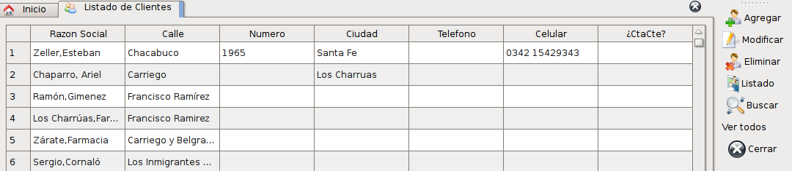
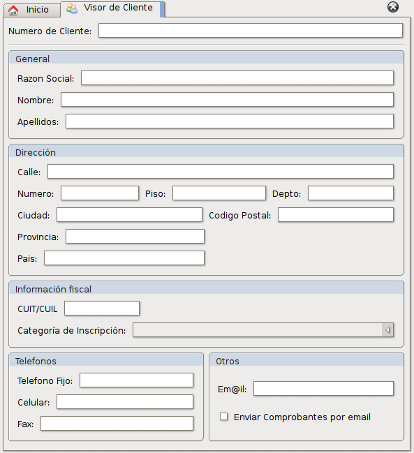
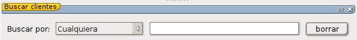

Administración de clientes
El sistema le permite administrar los clientes que usted posee en su negocio.
Para ver la lista de clientes que existe declarada en el sistema, puede hacerlo ingresando desde el menú Herramientas -> Clientes, o desde la pantalla principal utilizando el icono correspondiente.
Esto mostrará una vista rápida que contendrá los principales datos de los clientes en un listado simple como se muestra a continuación:

Como acciones disponibles tenemos:
Agregar
Esta acción nos permite agregar un nuevo cliente en nuestra base de datos y mostrará un formulario como el siguiente:
En este formulario podremos ingresar cada uno de los datos correspondientes al cliente.
Para un mejor uso, tenga en cuenta lo siguiente:
- El campo de Razón social se formará automáticamente si ingresa el nombre y el apellido. Pero, aun así puede ingresar un nombre y apellido y cambiar la razón social por la que desee.
- El campo de CUIT/CUIL solo le permitirá ingresar un numero de CUIT o CUIL válido. Estos números poseen una forma de verificar que son correctos. Si no desea ingresar uno, déjelo en blanco. Este campo además posee una mascara de entrada en la cual ya estan los guiones separadores.
- El numero de cliente se generará automáticamente, por lo tanto no es necesario rellenarlo.
- En la lista desplegable de Categoría de inscripción podrá seleccionar el estado fiscal del cliente.
- Los campos obligatorios para poder guardar un nuevo cliente son:
- Razón social.
- Categoría de Inscripción.
- Si ingreso un CUIL/CUIT, este debe ser válido.
Una vez completados los datos del cliente, utilizando la acción Guardar, se dará de alta el nuevo cliente.
 Modificar
Modificar
Para utilizar esta acción deberá tener seleccionado un cliente del listado. Si tiene muchos clientes seleccionados solo se podrá editar el primero.
Al utilizarlo abrirá una ventana idéntica a la de la acción de agregar pero el formulario esta completado con los datos del cliente.
Modifique los datos pertinentes y luego utilice la acción de Guardar para guardar los datos y cerrar la ventana.
Eliminar
Esta acción le permite eliminar los clientes que se encuentren seleccionados del listado.
El sistema verificará que no exista ninguna relación entre el cliente y cualquiera de los datos que posee guardados en el sistema y de existir alguna, no le permitirá eliminar el cliente.
Listado
Esta acción le permite generar un listado con todos los clientes de manera impresa.
Buscar
Esta acción abrirá una sección debajo de el listado de clientes que le permitirá hacer búsquedas dentro del listado. La nueva sección de filtrado posee la siguiente forma:

Se puede elegir entre las siguientes formas de buscar:
- Cualquiera: Buscará el texto ingresado en todos los campos de la lista de clientes.
- Número de cliente: Buscará el numero de cliente ingresado.
- Razón Social: Buscará dentro de las razones sociales existentes.
- CUIT/CUIL: Buscará dentro de los cuit/cuil declarados.
Para volver a ver la lista normalmente, utilice el botón borrar o cierre la ventana.
Ver todos
Mostrará todos los clientes que hay en el sistema cargados en la lista.